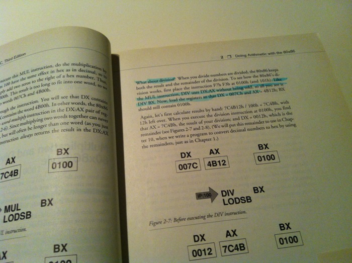
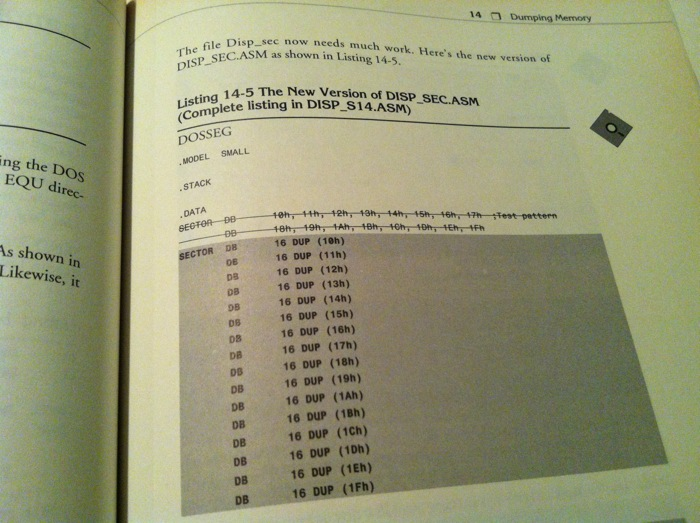
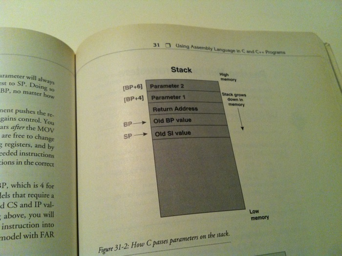
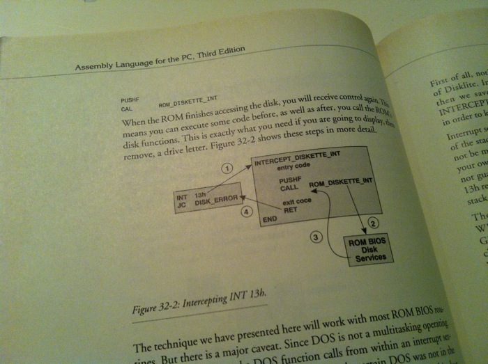
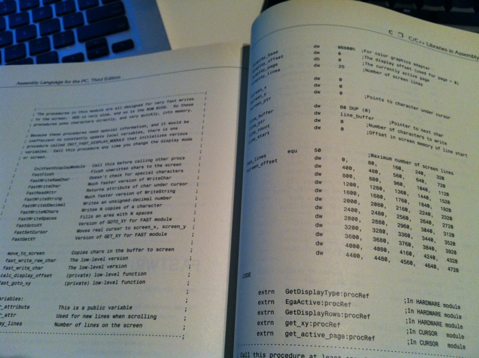

"Assembly language for the PC" by Peter Norton and John Socha
I keep going reviewing books which influenced on me considerably at the time. Today it is a book by Peter Norton and John Socha about programming in the assembly language for the PC.
A small lyrical digression.
Does any know that Peter Norton didn’t write the famous Norton Commander? The Norton Commander had been invented and then maintained by John Socha up to its “canonical” version 3. Socha used quite an unusual approach in those days mixing the assembly language with C when most of “true” developers programmed purely in assembly. It allowed developing sophisticated but still fast and efficient applications much quicker.
Okay, go back to the book. It liked the idea of buying old books almost for nothing just for the sake of holding them in hands.

Wonderful. They sent me a decommissioned library copy carefully glued by the sticky tape.

I personally don’t like when people write in books or fold page corners, but this looks very touching – somebody did drilled this stuff.

Is it still possible NOT to understand how EQU works?

Or DUP?

Or stack?

Or how to intercept interrupts in DOS?

By the way, it turned that I have got the third edition of the book having a couple of extra chapters about 286 and 386 comparing to its first edition which I read years ago in Russian.

The bottom line – this book was and still is fantastic.

Through the book they explain step by step a process of developing a program called “dskpatch”, a visual editor allowing viewing and modifying individual sectors on floppy or hard drives. In the end it turns into an advanced product split into modules and having dozens of generic routines easily re-usable in any program. Starting from the very beginning you have to learn the basics of 8086, then BIOS and DOS functions, the direct access to video memory and keyboard.
But the main thing is that this book explains how to write really big projects in assembly. For example, my real opening was that if each subroutine always preserves the registers which are not to pass parameters and to return the result the amount of “unpredictable side effects” drops down substantially. Of course, today it sounds like information from a nursery level, but even in the nursery somebody has communicate it.
In the appendix there is the full carefully commented listing of “dskptach”.
Also, the third edition has a few chapters about mixing the assembler and high level languages like C and PASCAL. Passing function parameters to and from the assembler routines is explained in all details. As a bonus, there is a library with an unambiguous name – SOCHALIB congaing a lot of very useful routines for the screen, mouse and the keyboard. It was delightfully impressed that a routine putting a character on the screen used a pre-calculated lookup table to compute an address of the screen line base instead of multiplying Y times 80 directly. I suspect the code of the library resides somewhere inside the Norton Commander and Norton Utilities, and it explains why these products worked blazingly fast.

The conclusion: strongly recommended as an example of the perfect textbook.
Disclaimer